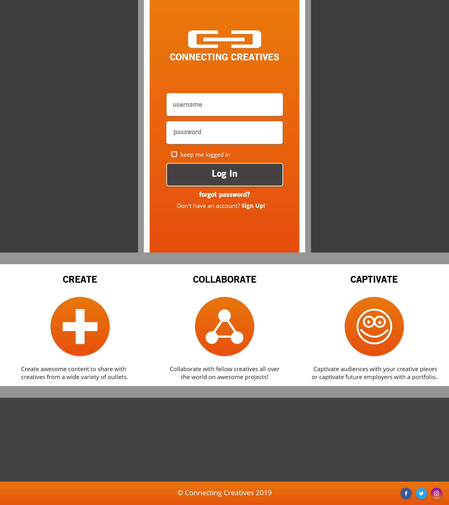
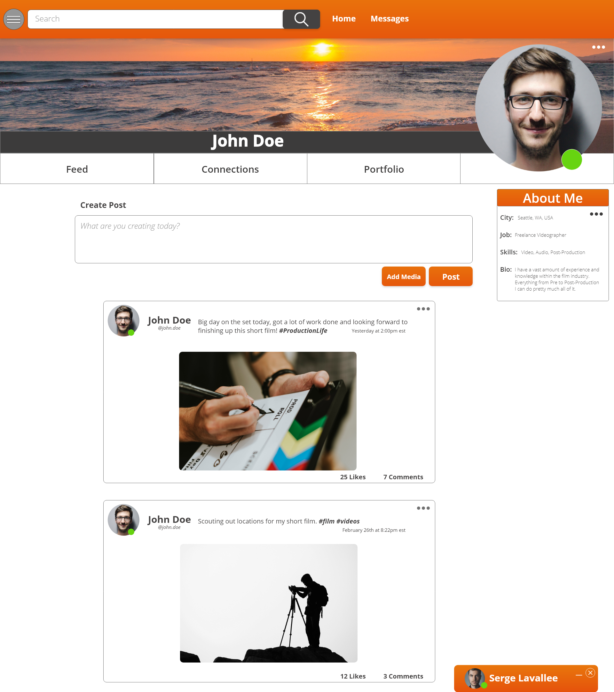
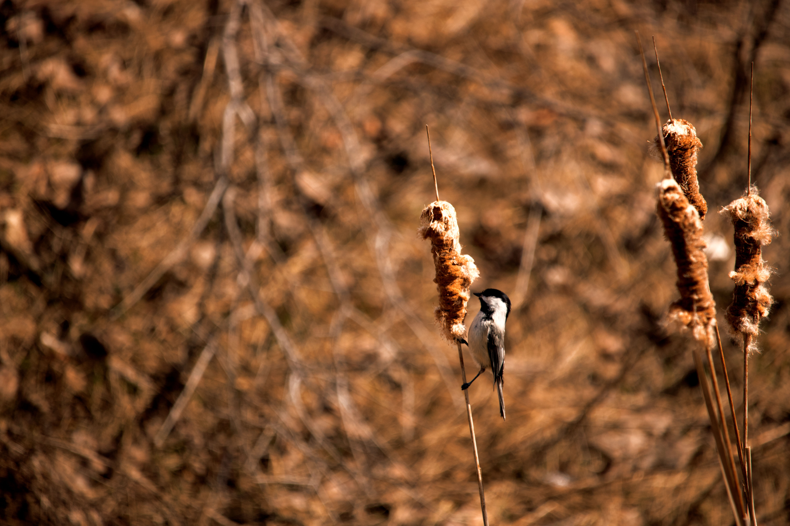
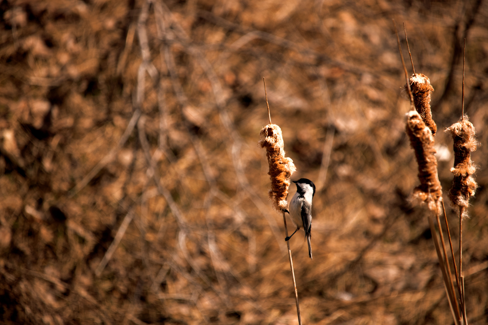
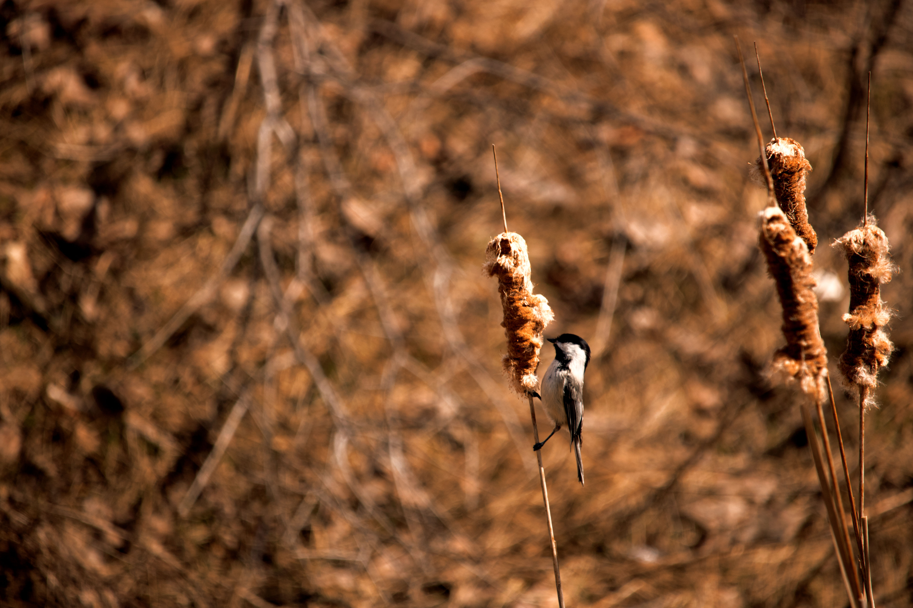

Home
My Work
Contact
UI/UX DESIGN
Created using programs such as: Photoshop CC, Illustrator CC, and Adobe Xd CC
 
PHOTGRAPHY
Photos taken with my Canon EOS Rebel T6i and edited with Photoshop CC and Lightroom CC

 
